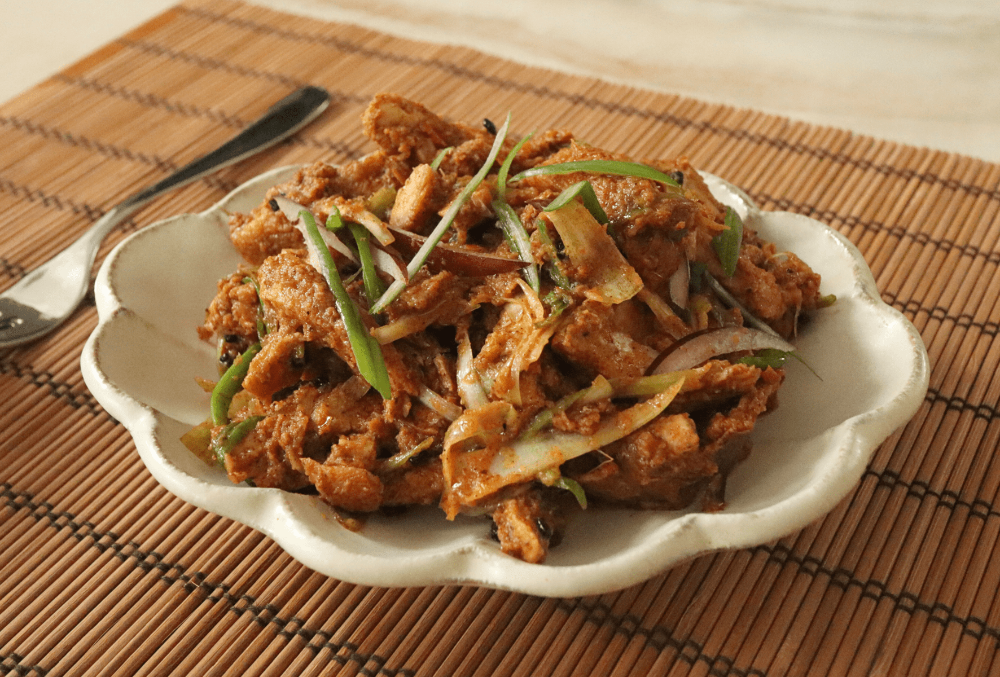

Choila

Description
Choila, sometimes Chhwela or Chhoyela (Nepali: छोयला) is
a typical Newari dish that consists of spiced grilled buffalo meat. Though
the dish is traditionally popular with water buffalo meat, nowadays
mutton, chicken, duck meat and mushroom are also being used.
Ingredients
-
Meat (500 grams of buffalo meat (you can also use chicken, pork, or
lamb))
- Garlic (2 cloves)
- Ginger (Minced)
- Green Chillies
- Red Chilli Powder (1tbps)
- Turmeric Powder (1tbps)
- Cumin Powder (1tbps)
- Coriander Powder (1tbps)
- Mustard Oil (3tbps)
- Salt (to taste)
- Cilantro (Chopped)
- Green Onion (Chopped)
Steps
- Cut the meat into bite-sized pieces.
-
In a bowl, combine the meat with minced garlic, ginger, green chilies,
red chili powder, turmeric powder, cumin powder, coriander powder, and
salt.
-
Mix well and let it marinate for at least 30 minutes (or longer for
better flavor).
-
Grill the meat pieces over medium-high heat until they are cooked
through and slightly charred. If using an oven, roast at 200°C (400°F)
for about 20-25 minutes, turning occasionally.
- Set aside to cool slightly.
- Heat mustard oil in a small pan over medium heat.
-
Add fenugreek seeds and fry until they turn dark brown (be careful not
to burn them).
-
In a large mixing bowl, combine the grilled/roasted meat with the
fenugreek-infused mustard oil.
-
Add lemon juice and mix well to coat the meat evenly with the spices and
oil.
- Garnish with chopped cilantro and green onions.